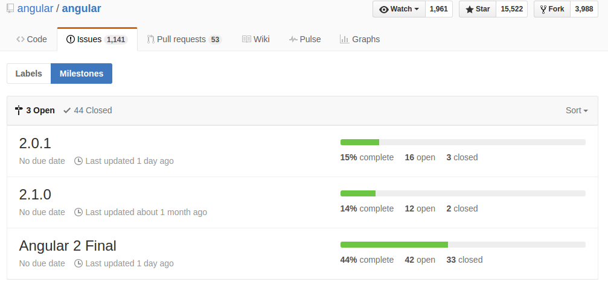

Thursday, Aug 11, 2016
Angular2 rc4가 나왔을때 라우터가 갈려나가는것을 보고 아 이제 좀 고만 고치겠구나 라고 생각했고 이제 슬슬 본격적으로 공부를 해볼까 생각하고 있었는데 얼마안있어 나온 rc5에서 모듈개념이 본격적으로 도입되면서 또 엄청나게 갈려나갔다.
같은 튜토리얼만 지금 몇번째 보는건지모르겠는데 ㅋㅋ 약간 방향을 바꾸어서 변경된 중요포인트를 확인하고 yeoman 과 같은 보일러플레이트를 활용해서 빠르고 아름답게 초기 환경 설정을 하고 간단한 예제를 만드는것을 목표로 공부를 해 보도록 하겠다.
Bootstrap 레이아웃이 난 맘에 별로 안들었다. 대충 만들기엔 정말 쉽고 편하고 좋은데 너무 정형화 되어있다는 느낌을 받았음. 그래서 이번 작은 프로젝트에서는 foundation 을 사용해보도록 하겠다.
패킹툴로 angular2에 systemjs가 webpack으로 바뀐다는 소리를 어디선가 들었다. 그래서 걍 공부도 할겸 둘 다 알아놓기로 하고 webpack이 초미의 관심사니까 사용법을 알아놔야겠다. 이미 튜토리얼에도 systemjs는 방법중 하나라고 내용이 바뀌어있는 상태이다.
자꾸 갈려나가서 Angular 팀의 Milestone 을 보았는데 아직 final release 까지 걸려있는 일들이 엄청 많다는걸 알게되었다. 일단 final release 까지는 보류해야겠다. 괜히 mega boilerplate 가 ETA 를 미룬게 아닌거 같다.

Angular 2.0 이 이 포스트를 작성하고나서 얼마 안있어 발표되었고
2016년 11월 1일 현재 벌써 2.1.1이 나왔고, Mega Boilerplate 는 아직 업데이트를 내놓지 않고있다.
공식 튜토리얼 분량이 얼마 안되니까 그냥 다 보도록 하자.